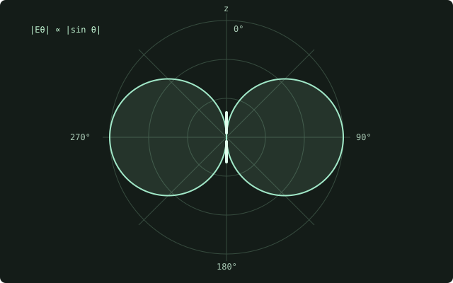

글 작성 안내
처음 한 번만 설치하기
Windows PC에 VS Code, Git, Quarto를 설치하고, VS Code에 Quarto 확장을 추가합니다. Markdown과 수식으로 HTML 글을 작성할 때 Python, R, TeX 배포판은 필요하지 않습니다.
git clone https://github.com/sonzigusta/sonzigusta.github.io.git
cd sonzigusta.github.io
code .
quarto preview이미 내려받았다면 해당 폴더를 열어주세요. 다른 PC에서 변경했다면 먼저 git pull로 최신 내용을 가져옵니다.
글과 주제 추가하기
templates/new-note.qmd를 복사해서 posts/글주소/index.qmd로 저장합니다. 폴더 이름에는 영문 소문자, 숫자, 하이픈을 사용합니다.
---
title: "글 제목"
description: "짧은 소개"
date: "2026-11-02"
categories: ["내가 정한 주제"]
draft: false
---categories에 원하는 주제명을 자유롭게 적으면 Notes의 주제 목록에 자동으로 나타납니다. 여러 주제로 분류하려면 ["주제 하나", "주제 둘"]처럼 적습니다. 같은 이름을 쓰는 글은 함께 분류됩니다. 고정된 주제 목록이나 별도 JSON 파일을 수정할 필요가 없습니다.
draft: true인 글은 사이트에 배포되지 않습니다. 공개 저장소에 커밋한 원고 자체는 공개되므로 비공개 원고는 PC에 보관합니다.
수식과 그림
문장 안 수식은 $k=2\pi/\lambda$처럼 적습니다. 독립된 수식은 다음과 같이 작성합니다.
$$
\nabla\times\mathbf E=-\frac{\partial\mathbf B}{\partial t}
$$ {#eq-faraday}
식 [-@eq-faraday]에서 출발합니다.실제로는 식 1처럼 표시됩니다.
\[ \nabla\times\mathbf E=-\frac{\partial\mathbf B}{\partial t} \tag{1}\]
그림은 글 폴더에 넣고 {#fig-result}로 추가합니다. 본문에서 그림 [-@fig-result]로 참조합니다.

위 그림 1은 작성 문법을 확인하기 위한 예시입니다. 참고문헌은 references.bib에 추가하고 본문에서 [@tong-em]처럼 인용합니다. 예: (Tong 2015).
첫 화면과 디자인 바꾸기
| 바꿀 내용 | 파일 |
|---|---|
| Welcome 소개와 첫 화면 수식 | index.qmd |
| 색상, 글꼴, 배너 사진, 글 폭 | assets/styles.css |
| Home / Notes / About me 메뉴 | _quarto.yml의 website.navbar |
| 자기소개 | about.qmd |
| 글 목록과 분류 방식 | notes.qmd |
| 새 글의 기본 양식 | templates/new-note.qmd |
주제별 글을 모으는 일은 각 글의 categories만 수정하면 됩니다. 상단에 별도 메뉴를 만들고 싶으면 페이지 .qmd 파일을 만든 뒤 _quarto.yml의 project.render와 website.navbar.right에 추가합니다.
- text: 원하는 메뉴 이름
href: my-page.qmd이전 기초 예제 원고 13개는 _examples/foundation-notes/에 보관되어 있으며 사이트에는 표시되지 않습니다. 참고할 글을 복사해 posts/에 넣을 때는 예전 topic 항목을 지우고 categories에 원하는 주제명을 적습니다.
미리보기와 공개하기
quarto preview를 실행하고 파일을 저장하면 내 PC에서 확인할 수 있습니다. 공개하려면 다음을 실행합니다.
quarto render
quarto run scripts/check-site.ts
git add .
git commit -m "Update my notes"
git pushGitHub Actions → Build and publish SWR Notes가 성공하면 사이트에 반영됩니다. _site/는 자동 생성 결과물이므로 원본 .qmd와 CSS 파일을 수정합니다. 작은 글 수정은 글 페이지의 Edit this page로도 할 수 있습니다.